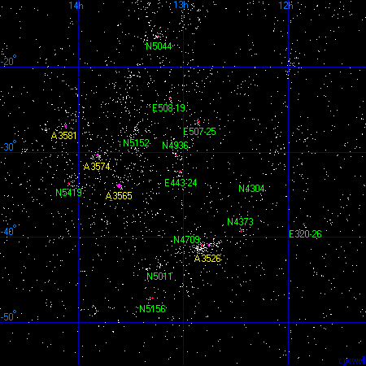
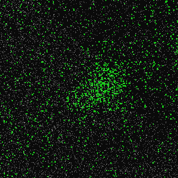

The Centaurus supercluster is the nearest large supercluster. This map below is a plot of the brightest galaxies (from the Principal Galaxies Catalogue) in this area of the sky. The supercluster is a fairly obvious structure in the middle of the map. Note that the plane of the Milky Way cuts its way through this region of the sky - any photographs of galaxies in the area of the Centaurus Supercluster are usually heavily contaminated with large numbers of foreground stars.
Below is a list of the major clusters of galaxies in the vicinity of the Centaurus Supercluster. The dominant cluster in the supercluster is A3526 - it is known as the Centaurus cluster. It only received a richness class of 0 in the Abell catalogue although it is probably better to regard it as a class 1 cluster. A3565, on the other hand, is a much poorer cluster and probably should be regarded as class 0. Also near the Centaurus supercluster is the Hydra cluster (A1060) and the very heavily obscured Norma cluster (A3627) which may be one of the most important clusters in the nearby universe.
1 2 3 4 5 6 7
Abell Equatorial Redshift Distance Rich Notes
Number Coordinates z Mly
RA Dec
A1060 10 36.9 -27 32 .0114 160 1 Hydra cluster
A3526 12 48.9 -41 18 .0102 140 0 Centaurus cluster
A3565 13 36.7 -33 58 .0111 155 1
A3574 13 49.2 -30 18 .0148 205 0
A3581 14 07.5 -27 01 .0218 300 0
A3627 16 15.5 -60 54 .0145 200 1 Norma cluster
|
Below is a list of some of the other major groups of galaxies in the Centaurus supercluster. These groups typically contain ten to twenty major galaxies each. Of particular interest is the NGC4709 group, this is a large group of galaxies which is directly behind the Centaurus cluster.
1 2 3 4 5 6 7
Group Equatorial Redshift Distance Rich Notes
Name Coordinates z Mly
RA Dec
ESO320-26 11 51.1 -38 27 .0090 125
NGC4304/IC3253 12 21.0 -35 10 .0083 115
NGC4373/IC3370 12 27.2 -39 20 .0095 130
NGC4709 12 49.0 -41 00 .0144 200
ESO507-25 12 51.0 -26 30 .0101 140
ESO443-24 13 01.8 -32 12 .0161 225
NGC4936 13 04.2 -30 20 .0100 140
ESO508-19 13 08.1 -23 44 .0091 125
NGC5011/5090 13 15.0 -43 30 .0106 145
NGC5044 13 15.1 -16 28 .0084 115
NGC5156/5064 13 17.9 -47 15 .0093 130
NGC5152 13 27.0 -29 42 .0135 185
NGC5419/5488 14 06.0 -33 42 .0134 185
|
Column 1: The name/number of the cluster or group.
Column 2: The Right Ascension for epoch 2000.
Column 3: The Declination for epoch 2000.
Column 4: The redshift of the cluster.
Column 5: The distance in millions of light years assuming H=70km/s/Mpc.
Column 6: The 'richness' class of the cluster (for Abell clusters only).
Column 7: Additional names and notes.
References:
Abell G, Corwin H, Olowin R, (1989), A catalogue of Rich Clusters of Galaxies,
Astrophys J Supp, 70, 1.
Struble M, Rood H, (1999), A compilation of redshifts and velocity dispersions for
ACO clusters, Astrophys J, 125, 35.
Fouqué P, Gourgoulhon E, Chamaraux P, Paturel G, (1992), Groups of Galaxies within
80 Mpc, Astron Astrophys Supp, 93, 211.
Garcia A, (1993), General study of group membership. II. Determination of nearby groups.
Astron Astrophys Supp, 100, 47.
Giuricin G, Marinoni C, Ceriani L, Pisani A, (2000), Nearby optical galaxies: selection
of the sample and identification of groups. Astrophys J, 543, 178.

This is a second map of the Centaurus supercluster. This is a close-up view of the supercluster showing all of the major groups listed in the table above. The Centaurus supercluster is a long supercluster that stretches away from us. A3581 is the most distant of the clusters and is 300 million light years from us, although at that distance it is hard to say whether it is actually part of the supercluster.
The Centaurus cluster - A3526 - is the nearest cluster of galaxies listed in the Abell catalogue (which doesn't include the Virgo cluster). The cluster contains a similar number of galaxies to the Virgo and Hydra clusters. This photograph shows a two-degree-wide area of the sky centred on the cluster. There are thousands of foreground stars in this picture, but the brightest galaxies are clearly visible as the various white blobs. The brightest galaxy is NGC 4696 - a massive elliptical galaxy.
Below is a map of the Centaurus cluster. This map shows the positions of 118 of the brightest galaxies in this cluster. Some of these galaxies are actually background galaxies that form part of a separate cluster that lies 60 million light years behind the Centaurus cluster. This includes NGC 4709, which is the second brightest galaxy in this region. It is perhaps best to regard the Centaurus cluster as two separate clusters superimposed on each other.
The systematic study of the Centaurus supercluster began in the 1980's. da Costa, Numes, Pellegrini, Willmer, Chincarini and Cowan produced one of the first major studies of the galaxies in the Centaurus (and Hydra) regions in a paper published in 1986 and in a second paper in 1987.
People soon began to notice the presence of a much larger supercluster 500 million light years behind the Centaurus supercluster. (For example Melnick and Moles in a paper published in 1987). This is the Shapley Supercluster. Most scientific work in the Centaurus region has in recent years focused on the Shapley supercluster because it is one of the largest and densest superclusters within a billion light years.
The Centaurus cluster (A3526) is the nearest rich cluster of galaxies beyond the Virgo cluster and it has been studied for several decades (a good early example is a paper by J Dawe, R Dickens and B Peterson from 1977). Probably the best study of the Centaurus cluster was produced by J Lucey, M Currie and R Dickens in a series of 3 papers (1, 2, 3) in 1986. Their second paper showed that the Centaurus cluster consisted of two separate clusters superimposed onto each other.
The Centaurus cluster is also a strong X-ray source as noted, for example, by S Allen and A Fabian in a paper in 1994, they produced an X-ray map of the cluster.
The Centaurus cluster continues to receive a lot of scientific investigation, H Jerjen and A Dressler produced a catalogue of the galaxies in the Centaurus cluster in 1997.
In 1987, D Burstein, R Davies, A Dressler, S Faber, D Lynden-Bell, R Terlevich and G Wegner while studying the velocities of galaxies in the nearby universe published evidence in a series of papers (1, 2) that there is a large scale motion of galaxies towards the Centaurus region of the sky. They called this region the Great Attractor. Unfortunately the exact location of the object pulling the galaxies is very near to the plane of the Galaxy and hidden by the foreground gas, dust and stars.
A typical velocity map of the nearby universe (from Dynamics of Cosmic Flows by A Dekel) is shown on the right. This map shows the velocities of galaxies close to the supergalactic plane. Our galaxy is in the centre. On the left side of the map is a heavy concentration of matter which seems to be pulling galaxies towards it.
Kraan-Korteweg, Woudt, Cayatte, Fairall, Balkowski and Henning reported in a paper in 1996 that there was a large cluster of galaxies in this region which had been previously ignored. This is the A3627 cluster (or the Norma cluster). Careful study of this cluster showed that it is a massive cluster of galaxies similar in scale to the Coma or Perseus clusters. It is therefore the nearest of the very rich clusters which contain thousands of galaxies. It is not an easy cluster to see, and large-angle photographs of this region usually show immense numbers of foreground stars and not much else.
Left: A photograph of a 2 degree wide area of the sky centred on the A3627 galaxy cluster reveals little more than the stars of the Milky Way. But if we plot onto the image the locations of strong X-ray sources (in green) from the ROSAT All-Sky Survey, a major stucture is revealed. This is the A3627 cluster.
This is not quite the end of the Great Attractor story. Although the A3627 cluster is a massive cluster, it may not be massive enough to cause so many galaxies to move towards it. There is a possibility that there may be a second rich cluster even closer to the plane of the Galaxy and even harder to see. R Kraan-Korteweg and P Woudt report that there is a strong radio source (called PKS1343-601) behind the Milky Way which may be another rich cluster of galaxies.